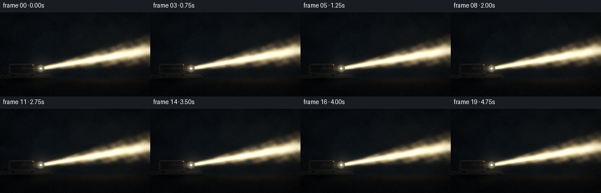
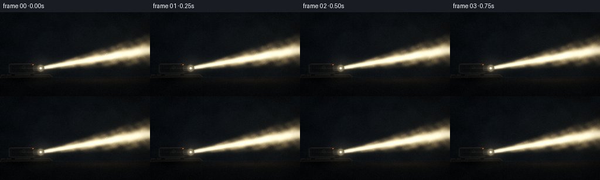
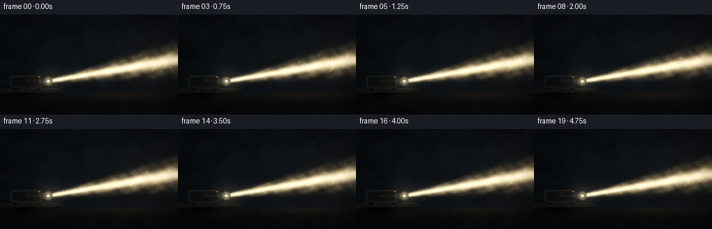
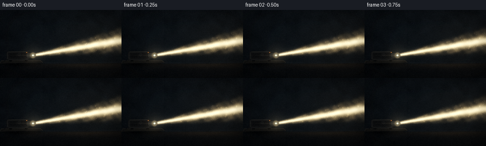

CODING AGENTS AS PIXEL WORLD MODELS
traex/DeepSeek-V4.1-Flash · phygen_055
点击播放 · 原生 RGB 像素
逐轮保存的候选
回放视频、检查图与代码变化。
每份候选均可单独播放。实际图片检查记录在下方工具轨迹中。
候选 01播放与检查图
点击播放 · 原生 RGB 像素


展开代码变化
--- 上一保存版本
+++ 本次保存版本
@@ -0,0 +1,311 @@
+"""Procedural renderer for a projector beam in a dark, dusty room."""
+
+from pathlib import Path
+
+import numpy as np
+from PIL import Image, ImageDraw, ImageFilter
+
+import artifact_io
+
+
+OUT_W, OUT_H = 256, 144
+FRAMES = 20
+SCALE = 4
+W, H = OUT_W * SCALE, OUT_H * SCALE
+SEED = 55055
+
+
+def smooth_noise(rng, height, width, cell):
+ """Low-resolution noise resized into a soft continuous field."""
+ small_h = max(3, height // cell + 3)
+ small_w = max(3, width // cell + 3)
+ data = rng.normal(0.0, 1.0, (small_h, small_w)).astype(np.float32)
+ image = Image.fromarray(data, mode="F")
+ image = image.resize((width, height), Image.Resampling.BICUBIC)
+ return np.asarray(image, dtype=np.float32)
+
+
+def fbm(rng, height, width):
+ field = (
+ smooth_noise(rng, height, width, 96) * 0.48
+ + smooth_noise(rng, height, width, 43) * 0.29
+ + smooth_noise(rng, height, width, 17) * 0.15
+ + smooth_noise(rng, height, width, 7) * 0.08
+ )
+ return field / 0.82
+
+
+def screen(base, light):
+ return 1.0 - (1.0 - np.clip(base, 0.0, 1.0)) * (1.0 - np.clip(light, 0.0, 1.0))
+
+
+def to_image(rgb):
+ data = (np.clip(rgb, 0.0, 1.0) * 255.0 + 0.5).astype(np.uint8)
+ return Image.fromarray(data, mode="RGB")
+
+
+def add_particle(field, x, y, sigma, amplitude, color):
+ radius = max(2, int(np.ceil(sigma * 2.8)))
+ left = int(np.floor(x)) - radius
+ top = int(np.floor(y)) - radius
+ right = left + radius * 2 + 1
+ bottom = top + radius * 2 + 1
+
+ x0, y0 = max(0, left), max(0, top)
+ x1, y1 = min(W, right), min(H, bottom)
+ if x1 <= x0 or y1 <= y0:
+ return
+
+ px = np.arange(x0, x1, dtype=np.float32) + 0.5
+ py = np.arange(y0, y1, dtype=np.float32) + 0.5
+ gx = np.exp(-0.5 * ((px - x) / sigma) ** 2)
+ gy = np.exp(-0.5 * ((py - y) / sigma) ** 2)
+ glow = gy[:, None] * gx[None, :] * amplitude
+ field[y0:y1, x0:x1] += glow[:, :, None] * np.asarray(color, dtype=np.float32)
+
+
+def draw_projector(rgb):
+ image = to_image(rgb).convert("RGBA")
+
+ shadow = Image.new("RGBA", (W, H), (0, 0, 0, 0))
+ sd = ImageDraw.Draw(shadow)
+ sd.ellipse((22, 418, 355, 476), fill=(0, 0, 0, 145))
+ shadow = shadow.filter(ImageFilter.GaussianBlur(11))
+ image = Image.alpha_composite(image, shadow)
+
+ overlay = Image.new("RGBA", (W, H), (0, 0, 0, 0))
+ draw = ImageDraw.Draw(overlay)
+
+ # A shallow table anchors the projector and catches a trace of lens light.
+ draw.polygon([(8, 430), (337, 425), (361, 445), (0, 453)], fill=(16, 16, 15, 255))
+ draw.line([(8, 430), (337, 425)], fill=(52, 48, 41, 210), width=3)
+ draw.line([(337, 425), (361, 445)], fill=(34, 32, 28, 255), width=3)
+ draw.line([(8, 430), (0, 453)], fill=(31, 29, 26, 255), width=3)
+
+ # Cable and rear foot.
+ draw.line([(64, 411), (42, 431), (26, 439), (8, 445)], fill=(7, 8, 9, 255), width=6)
+ draw.line([(64, 411), (42, 431), (26, 439), (8, 445)], fill=(23, 23, 22, 255), width=2)
+ draw.rounded_rectangle((76, 419, 100, 435), radius=5, fill=(7, 8, 8, 255))
+ draw.rounded_rectangle((209, 419, 232, 435), radius=5, fill=(7, 8, 8, 255))
+
+ # Main body: a compact side-on projector with a faint top bevel.
+ draw.rounded_rectangle((55, 349, 244, 425), radius=17, fill=(14, 15, 16, 255))
+ draw.rounded_rectangle((59, 352, 240, 420), radius=14, fill=(21, 22, 22, 255))
+ draw.rounded_rectangle((67, 358, 225, 413), radius=9, fill=(12, 13, 14, 255))
+ draw.line([(73, 357), (224, 354)], fill=(60, 59, 53, 190), width=3)
+ draw.line([(65, 363), (66, 408)], fill=(38, 39, 39, 170), width=2)
+
+ # Ventilation slots and a small control dial.
+ for x in (82, 93, 104, 115, 126):
+ draw.rounded_rectangle((x, 371, x + 5, 401), radius=2, fill=(6, 7, 8, 255))
+ draw.line([(x + 1, 373), (x + 1, 399)], fill=(31, 32, 32, 120), width=1)
+ draw.ellipse((150, 367, 172, 389), fill=(8, 9, 10, 255), outline=(38, 39, 39, 255), width=2)
+ draw.ellipse((157, 374, 165, 382), fill=(25, 26, 26, 255))
+ draw.ellipse((221, 357, 230, 366), fill=(177, 91, 37, 255))
+ draw.ellipse((224, 360, 227, 363), fill=(255, 185, 94, 255))
+
+ # Lens barrel and concentric glass.
+ draw.rounded_rectangle((218, 361, 287, 407), radius=14, fill=(8, 9, 10, 255))
+ draw.rounded_rectangle((223, 365, 283, 403), radius=11, fill=(28, 29, 28, 255))
+ draw.ellipse((252, 360, 302, 408), fill=(6, 7, 8, 255), outline=(62, 59, 51, 255), width=3)
+ draw.ellipse((258, 365, 297, 403), fill=(10, 13, 15, 255), outline=(96, 79, 50, 255), width=3)
+ draw.ellipse((264, 371, 291, 397), fill=(7, 13, 17, 255), outline=(33, 64, 70, 220), width=2)
+ draw.ellipse((270, 377, 285, 391), fill=(255, 230, 160, 255))
+ draw.ellipse((274, 380, 281, 387), fill=(255, 255, 239, 255))
+ draw.arc((259, 366, 296, 402), 205, 318, fill=(166, 139, 82, 190), width=2)
+
+ image = Image.alpha_composite(image, overlay)
+ return np.asarray(image.convert("RGB"), dtype=np.float32) / 255.0
+
+
+def main():
+ rng = np.random.default_rng(SEED)
+ yy, xx = np.mgrid[0:H, 0:W].astype(np.float32)
+
+ # Dark room with a shallow floor plane, wall seams, and soft uneven haze.
+ texture = fbm(rng, H, W)
+ fine = rng.normal(0.0, 1.0, (H, W)).astype(np.float32)
+ floor_line = H * 0.775 + 8.0 * np.sin((xx / W) * 2.2 + 0.5)
+ floor_mask = 1.0 / (1.0 + np.exp(-(yy - floor_line) / 2.5))
+ wall_glow = np.exp(-(((xx - W * 0.68) / (W * 0.55)) ** 2 + ((yy - H * 0.53) / (H * 0.5)) ** 2))
+
+ wall = np.empty((H, W, 3), dtype=np.float32)
+ wall[:, :, 0] = 0.020 + 0.010 * wall_glow + 0.006 * texture
+ wall[:, :, 1] = 0.028 + 0.014 * wall_glow + 0.007 * texture
+ wall[:, :, 2] = 0.036 + 0.014 * wall_glow + 0.008 * texture
+
+ floor = np.empty((H, W, 3), dtype=np.float32)
+ floor[:, :, 0] = 0.014 + 0.004 * texture
+ floor[:, :, 1] = 0.017 + 0.004 * texture
+ floor[:, :, 2] = 0.020 + 0.004 * texture
+
+ rgb = wall * (1.0 - floor_mask[:, :, None]) + floor * floor_mask[:, :, None]
+
+ # Sparse architectural detail: wall seams and a dark baseboard.
+ for seam_x, strength in ((W * 0.355, 0.006), (W * 0.735, 0.004)):
+ seam = np.exp(-0.5 * ((xx - seam_x) / 2.0) ** 2)
+ rgb -= seam[:, :, None] * np.array([strength, strength * 0.9, strength * 0.8], dtype=np.float32)
+ baseboard = np.exp(-0.5 * ((yy - (floor_line - 8.0)) / 3.0) ** 2)
+ rgb += baseboard[:, :, None] * np.array([0.010, 0.011, 0.012], dtype=np.float32)
+
+ # A very faint cool ambient wash keeps the silhouettes readable.
+ ambient = np.exp(-(((xx - W * 0.48) / (W * 0.7)) ** 2 + ((yy - H * 0.4) / (H * 0.75)) ** 2))
+ rgb = screen(rgb, ambient[:, :, None] * np.array([0.018, 0.026, 0.034], dtype=np.float32))
+
+ # Beam geometry: lens at left, expanding through the right side of the room.
+ sx, sy = 279.0, 384.0
+ ex, ey = W + 42.0, 250.0
+ vx, vy = ex - sx, ey - sy
+ length = float(np.hypot(vx, vy))
+ ux, uy = vx / length, vy / length
+ t = (xx - sx) * ux + (yy - sy) * uy
+ q = -(xx - sx) * uy + (yy - sy) * ux
+ tt = np.clip(t, 0.0, length + 80.0)
+ radius = 8.5 + 0.116 * tt
+
+ near_mask = 1.0 / (1.0 + np.exp(-(t - 13.0) / 5.0))
+ far_mask = 1.0 / (1.0 + np.exp((t - (length + 18.0)) / 70.0))
+ radial = np.abs(q) / radius
+ body = np.exp(-1.22 * radial**4)
+ core = np.exp(-0.5 * (q / (0.17 * radius + 3.8)) ** 2)
+
+ # Slow, layered variation gives the volume a physically plausible uneven haze.
+ beam_noise = (
+ 0.50
+ + 0.16 * np.sin(t * 0.040 + q * 0.035)
+ + 0.10 * np.sin(t * 0.093 - q * 0.061 + 1.7)
+ + 0.07 * np.sin(t * 0.017 + q * 0.119 + 0.4)
+ )
+ shafts = 0.84 + 0.16 * np.sin((q / radius) * 8.2 + t * 0.031 + 1.2 * np.sin(t * 0.010))
+ volume = body * np.clip(beam_noise, 0.16, 0.86) * shafts
+ beam_mask = near_mask * far_mask
+ beam_light = beam_mask * (0.39 * volume + 0.58 * core)
+ beam_light = np.clip(beam_light, 0.0, 1.0)
+ beam_rgb = beam_light[:, :, None] * np.array([1.00, 0.82, 0.52], dtype=np.float32)
+ beam_rgb += (beam_mask * core * 0.28)[:, :, None] * np.array([1.0, 0.95, 0.76], dtype=np.float32)
+ rgb = screen(rgb, beam_rgb)
+
+ # Light scattered onto the far wall and the floor below the cone.
+ wall_spill = np.exp(-(((xx - W * 0.82) / (W * 0.31)) ** 2 + ((yy - H * 0.48) / (H * 0.42)) ** 2))
+ floor_spill = floor_mask * np.exp(-(((xx - W * 0.68) / (W * 0.34)) ** 2 + ((yy - H * 0.80) / (H * 0.055)) ** 2))
+ spill = 0.030 * wall_spill + 0.055 * floor_spill
+ rgb = screen(rgb, spill[:, :, None] * np.array([1.0, 0.72, 0.40], dtype=np.float32))
+
+ # Build a stable cloud of dust in beam coordinates.
+ count = 920
+ p_t = rng.uniform(20.0, length + 40.0, count).astype(np.float32)
+ p_r = 8.5 + 0.116 * p_t
+ p_q = (rng.normal(0.0, 0.58, count) * p_r).astype(np.float32)
+ p_q = np.clip(p_q, -1.30 * p_r, 1.30 * p_r)
+ p_depth = rng.uniform(0.24, 1.0, count).astype(np.float32)
+ p_size = (0.75 + rng.exponential(0.82, count)).clip(0.75, 5.0).astype(np.float32)
+ p_phase = rng.uniform(0.0, 2.0 * np.pi, count).astype(np.float32)
+ p_phase2 = rng.uniform(0.0, 2.0 * np.pi, count).astype(np.float32)
+ p_omega = rng.uniform(0.18, 0.58, count).astype(np.float32)
+ p_drift_t = rng.normal(0.0, 1.15, count).astype(np.float32)
+ p_drift_q = rng.normal(0.0, 0.75, count).astype(np.float32)
+ p_amp_q = rng.uniform(0.7, 4.2, count).astype(np.float32)
+ p_amp_t = rng.uniform(0.4, 2.8, count).astype(np.float32)
+
+ # A few closer, softer motes create depth without turning the scene snowy.
+ close_count = 36
+ c_t = rng.uniform(40.0, length + 20.0, close_count).astype(np.float32)
+ c_r = 8.5 + 0.116 * c_t
+ c_q = (rng.normal(0.0, 0.72, close_count) * c_r).astype(np.float32)
+ c_size = rng.uniform(5.0, 11.5, close_count).astype(np.float32)
+ c_phase = rng.uniform(0.0, 2.0 * np.pi, close_count).astype(np.float32)
+
+ frames = []
+ for frame_index in range(FRAMES):
+ elapsed = frame_index / 4.0
+ pulse = 1.0 + 0.012 * np.sin(elapsed * 2.1 + 0.7) + 0.006 * np.sin(elapsed * 7.3)
+ frame_rgb = rgb * pulse
+
+ # The beam haze evolves slowly, independent of the particle motion.
+ drift = 7.0 * np.sin(elapsed * 0.68) + 2.2 * np.sin(elapsed * 1.73 + 1.1)
+ haze_mod = 0.96 + 0.04 * np.sin(t * 0.024 - elapsed * 1.1 + q * 0.018)
+ frame_beam = beam_light * haze_mod
+ frame_beam_rgb = frame_beam[:, :, None] * np.array([1.0, 0.82, 0.52], dtype=np.float32)
+ frame_beam_rgb += (beam_mask * core * 0.28 * pulse)[:, :, None] * np.array([1.0, 0.95, 0.76], dtype=np.float32)
+ frame_rgb = screen(frame_rgb, np.clip(frame_beam_rgb, 0.0, 1.0))
+
+ dust = np.zeros((H, W, 3), dtype=np.float32)
+ for i in range(count):
+ tf = p_t[i] + p_drift_t[i] * elapsed + p_amp_t[i] * np.sin(p_omega[i] * elapsed + p_phase[i]) + drift * (0.18 + 0.3 * p_depth[i])
+ qf = p_q[i] + p_drift_q[i] * elapsed + p_amp_q[i] * np.sin(p_omega[i] * 0.83 * elapsed + p_phase2[i])
+ rr = 8.5 + 0.116 * max(tf, 0.0)
+ radial_vis = np.exp(-1.55 * (qf / rr) ** 2)
+ twinkle = 0.73 + 0.27 * np.sin(elapsed * (1.4 + p_omega[i]) + p_phase[i] * 1.7)
+ px = sx + ux * tf - uy * qf
+ py = sy + uy * tf + ux * qf
+ if px < -12 or px > W + 12 or py < -12 or py > H + 12:
+ continue
+ sigma = p_size[i] * (0.72 + 0.44 * p_depth[i])
+ amplitude = (0.065 + 0.20 * p_depth[i]) * radial_vis * twinkle
+ add_particle(dust, px, py, sigma, amplitude, (1.0, 0.79, 0.46))
+
+ for i in range(close_count):
+ tf = c_t[i] + 1.8 * np.sin(elapsed * 0.31 + c_phase[i])
+ qf = c_q[i] + 2.4 * np.sin(elapsed * 0.44 + c_phase[i] * 1.6)
+ rr = 8.5 + 0.116 * max(tf, 0.0)
+ radial_vis = np.exp(-1.8 * (qf / rr) ** 2)
+ px = sx + ux * tf - uy * qf
+ py = sy + uy * tf + ux * qf
+ add_particle(dust, px, py, c_size[i], 0.028 * radial_vis, (1.0, 0.76, 0.44))
+
+ # Dim ambient motes outside the beam still catch a little room light.
+ ambient_count = 130
+ for i in range(ambient_count):
+ base_x = (i * 173 + 41) % W
+ base_y = (i * 97 + 29) % H
+ px = base_x + 4.0 * np.sin(elapsed * (0.17 + (i % 7) * 0.018) + i * 0.91)
+ py = base_y + 3.0 * np.sin(elapsed * (0.13 + (i % 5) * 0.021) + i * 0.63)
+ add_particle(dust, px, py, 0.75 + (i % 4) * 0.16, 0.008 + (i % 5) * 0.0015, (0.66, 0.72, 0.77))
+
+ frame_rgb = screen(frame_rgb, np.clip(dust, 0.0, 1.0))
+ frame_rgb = draw_projector(frame_rgb)
+
+ # Projector lens flare and the last highlight on the barrel.
+ lens_dist2 = (xx - 278.0) ** 2 + (yy - 384.0) ** 2
+ lens_core = np.exp(-lens_dist2 / (2.0 * 12.0**2))
+ lens_halo = np.exp(-lens_dist2 / (2.0 * 54.0**2))
+ streak_h = np.exp(-0.5 * ((yy - 384.0) / 2.1) ** 2) * np.exp(-np.abs(xx - 278.0) / 105.0)
+ streak_v = np.exp(-0.5 * ((xx - 278.0) / 1.7) ** 2) * np.exp(-np.abs(yy - 384.0) / 38.0)
+ flare = 0.46 * lens_core + 0.10 * lens_halo + 0.12 * streak_h + 0.035 * streak_v
+ frame_rgb = screen(frame_rgb, flare[:, :, None] * np.array([1.0, 0.88, 0.66], dtype=np.float32))
+
+ # Bloom the bright elements, then apply a restrained cinematic grade.
+ image = to_image(frame_rgb)
+ bright = np.asarray(image, dtype=np.float32) / 255.0
+ bright = np.maximum(bright - 0.24, 0.0) * 1.35
+ bright_image = to_image(bright)
+ bloom_small = bright_image.filter(ImageFilter.GaussianBlur(7.0))
+ bloom_large = bright_image.filter(ImageFilter.GaussianBlur(23.0))
+ bloom = (
+ np.asarray(bloom_small, dtype=np.float32) / 255.0 * 0.34
+ + np.asarray(bloom_large, dtype=np.float32) / 255.0 * 0.23
+ )
+ frame_rgb = screen(np.asarray(image, dtype=np.float32) / 255.0, bloom)
+
+ vignette = np.exp(
+ -0.72 * ((xx - W * 0.54) / (W * 0.62)) ** 4
+ - 0.85 * ((yy - H * 0.50) / (H * 0.64)) ** 4
+ )
+ frame_rgb *= (0.62 + 0.38 * vignette)[:, :, None]
+ frame_rgb = np.clip((frame_rgb - 0.004) * 1.055, 0.0, 1.0)
+
+ small = to_image(frame_rgb).resize((OUT_W, OUT_H), Image.Resampling.LANCZOS)
+ small_data = np.asarray(small, dtype=np.float32) / 255.0
+ frame_rng = np.random.default_rng(SEED + 900 + frame_index)
+ grain = frame_rng.normal(0.0, 0.0062, (OUT_H, OUT_W, 1)).astype(np.float32)
+ small_data = np.clip(small_data + grain, 0.0, 1.0)
+ frames.append((small_data * 255.0 + 0.5).astype(np.uint8))
+
+ return np.stack(frames)
+
+
+if __name__ == "__main__":
+ case_dir = Path(__file__).resolve().parent
+ video = main()
+ artifact_io.save(video, case_dir)
+ print(f"wrote {video.shape} video to {case_dir}")
候选 02播放与检查图
点击播放 · 原生 RGB 像素


展开代码变化
--- 上一保存版本
+++ 本次保存版本
@@ -20,7 +20,7 @@
small_h = max(3, height // cell + 3)
small_w = max(3, width // cell + 3)
data = rng.normal(0.0, 1.0, (small_h, small_w)).astype(np.float32)
- image = Image.fromarray(data, mode="F")
+ image = Image.fromarray(data)
image = image.resize((width, height), Image.Resampling.BICUBIC)
return np.asarray(image, dtype=np.float32)
@@ -41,7 +41,7 @@
def to_image(rgb):
data = (np.clip(rgb, 0.0, 1.0) * 255.0 + 0.5).astype(np.uint8)
- return Image.fromarray(data, mode="RGB")
+ return Image.fromarray(data)
def add_particle(field, x, y, sigma, amplitude, color):
@@ -126,7 +126,7 @@
texture = fbm(rng, H, W)
fine = rng.normal(0.0, 1.0, (H, W)).astype(np.float32)
floor_line = H * 0.775 + 8.0 * np.sin((xx / W) * 2.2 + 0.5)
- floor_mask = 1.0 / (1.0 + np.exp(-(yy - floor_line) / 2.5))
+ floor_mask = 1.0 / (1.0 + np.exp(-np.clip((yy - floor_line) / 2.5, -50.0, 50.0)))
wall_glow = np.exp(-(((xx - W * 0.68) / (W * 0.55)) ** 2 + ((yy - H * 0.53) / (H * 0.5)) ** 2))
wall = np.empty((H, W, 3), dtype=np.float32)
@@ -179,10 +179,10 @@
shafts = 0.84 + 0.16 * np.sin((q / radius) * 8.2 + t * 0.031 + 1.2 * np.sin(t * 0.010))
volume = body * np.clip(beam_noise, 0.16, 0.86) * shafts
beam_mask = near_mask * far_mask
- beam_light = beam_mask * (0.39 * volume + 0.58 * core)
+ beam_light = beam_mask * (0.30 * volume + 0.52 * core)
beam_light = np.clip(beam_light, 0.0, 1.0)
beam_rgb = beam_light[:, :, None] * np.array([1.00, 0.82, 0.52], dtype=np.float32)
- beam_rgb += (beam_mask * core * 0.28)[:, :, None] * np.array([1.0, 0.95, 0.76], dtype=np.float32)
+ beam_rgb += (beam_mask * core * 0.22)[:, :, None] * np.array([1.0, 0.95, 0.76], dtype=np.float32)
rgb = screen(rgb, beam_rgb)
# Light scattered onto the far wall and the floor below the cone.
@@ -226,7 +226,7 @@
haze_mod = 0.96 + 0.04 * np.sin(t * 0.024 - elapsed * 1.1 + q * 0.018)
frame_beam = beam_light * haze_mod
frame_beam_rgb = frame_beam[:, :, None] * np.array([1.0, 0.82, 0.52], dtype=np.float32)
- frame_beam_rgb += (beam_mask * core * 0.28 * pulse)[:, :, None] * np.array([1.0, 0.95, 0.76], dtype=np.float32)
+ frame_beam_rgb += (beam_mask * core * 0.22 * pulse)[:, :, None] * np.array([1.0, 0.95, 0.76], dtype=np.float32)
frame_rgb = screen(frame_rgb, np.clip(frame_beam_rgb, 0.0, 1.0))
dust = np.zeros((H, W, 3), dtype=np.float32)
@@ -241,7 +241,7 @@
if px < -12 or px > W + 12 or py < -12 or py > H + 12:
continue
sigma = p_size[i] * (0.72 + 0.44 * p_depth[i])
- amplitude = (0.065 + 0.20 * p_depth[i]) * radial_vis * twinkle
+ amplitude = (0.105 + 0.29 * p_depth[i]) * radial_vis * twinkle
add_particle(dust, px, py, sigma, amplitude, (1.0, 0.79, 0.46))
for i in range(close_count):
@@ -251,7 +251,7 @@
radial_vis = np.exp(-1.8 * (qf / rr) ** 2)
px = sx + ux * tf - uy * qf
py = sy + uy * tf + ux * qf
- add_particle(dust, px, py, c_size[i], 0.028 * radial_vis, (1.0, 0.76, 0.44))
+ add_particle(dust, px, py, c_size[i], 0.040 * radial_vis, (1.0, 0.76, 0.44))
# Dim ambient motes outside the beam still catch a little room light.
ambient_count = 130
可观测工具轨迹
实际执行的命令与返回图片。
命令 1exit 0
/bin/bash -c "pwd && rg --files -g 'prompt.txt' -g 'GENERATION_RULES.md' -g 'task_spec.json' -g '"'!node_modules'"'"
命令 2exit 0
/bin/bash -c 'git status --short && ls -la'
命令 3exit 0
/bin/bash -c 'cat prompt.txt'
命令 4exit 0
/bin/bash -c 'cat GENERATION_RULES.md'
命令 5exit 0
/bin/bash -c 'cat task_spec.json'
命令 6exit 0
/bin/bash -c "sed -n '1,240p' artifact_io.py && sed -n '1,260p' player_template.html"
命令 7exit 0
/bin/bash -c "command -v chafa || true; command -v viu || true; command -v ffmpeg || true; python - <<'PY'
import numpy, PIL
print('numpy', numpy.__version__, 'PIL', PIL.__version__)
PY"命令 8exit 0
/bin/bash -c 'python generate.py'
命令 9exit 0
/bin/bash -c "python - <<'PY'
from PIL import Image
import numpy as np
im=np.asarray(Image.open('frames/00.png').convert('RGB'),dtype=float)/255
lum=im@np.array([.2126,.7152,.0722])
# box downsample to 80x45
H,W=lum.shape
a=lum[:H//3*3,:W//2*2].reshape(H//3,3,W//2,2).mean((1,3))
chars=' .,:;irsXA253hMHGS#9B&@'
for row in a:
print(''.join(chars[min(len(chars)-1,int(v*len(chars)*1.8))] for v in row))
print('mean',lum.mean(),'p50/p90/p99/max',np.percentile(lum,[50,90,99,100]))
# bright footprint rows
for y in [30,50,70,90,110,130]:
xs=np.where(lum[y]>.15)[0]
print(y, (xs.min(),xs.max(),len(xs)) if len(xs) else None, round(lum[y].max(),3))
PY"命令 10exit 0
/bin/bash -c "python - <<'PY'
from PIL import Image
import numpy as np
fs=[np.asarray(Image.open(f'frames/{i:02d}.png'),dtype=np.float32)/255 for i in range(20)]
for i,f in enumerate(fs):
l=f@np.array([.2126,.7152,.0722])
print(i, 'mean',round(float(l.mean()),4),'p99',round(float(np.percentile(l,99)),3),'sat',round(float((l>.98).mean()),4))
print('diffs', [round(float(np.abs(fs[i]-fs[i-1]).mean()*255),2) for i in range(1,20)])
PY"命令 11exit 0
/bin/bash -c 'cp frames/00.png .tmp/candidate_01_frame00.png && cp inspection.png .tmp/candidate_01_inspection.png && python generate.py'
命令 12exit 0
/bin/bash -c "python - <<'PY'
from PIL import Image
import numpy as np
fs=[np.asarray(Image.open(f'frames/{i:02d}.png'),dtype=np.float32)/255 for i in range(20)]
for i in (0,5,10,15,19):
f=fs[i]; l=f@np.array([.2126,.7152,.0722])
print(i, 'mean',round(float(l.mean()),4),'p90',round(float(np.percentile(l,90)),3),'p99',round(float(np.percentile(l,99)),3),'clipped',round(float((l>.98).mean()),4))
print('diffs', [round(float(np.abs(fs[i]-fs[i-1]).mean()*255),2) for i in range(1,20)])
PY"命令 13exit 0
/bin/bash -c "python - <<'PY'
from PIL import Image
im=Image.open('inspection.png')
print(im.size)
# report key colors and non-black bbox
import numpy as np
f=np.asarray(Image.open('frames/00.png').convert('RGB'))
mask=f.max(2)>35
y,x=np.where(mask)
print('bbox',x.min(),y.min(),x.max(),y.max())
print('mean RGB',f.reshape(-1,3).mean(0).round(1))
PY
find . -maxdepth 2 -type f -printf '%p %s\\n' | sort"命令 14exit 0
/bin/bash -c "python - <<'PY'
from pathlib import Path
import json, numpy as np
from PIL import Image
spec=json.loads(Path('task_spec.json').read_text())
with np.load('pixels.npz') as z:
p=z['pixels']
assert p.shape==(spec['height'],spec['width'],spec['frames'])
assert np.isfinite(p).all()
frames=[np.asarray(Image.open(f'frames/{i:02d}.png'),dtype=np.float32) for i in range(spec['frames'])]
assert all(f.shape==(spec['height'],spec['width'],3) for f in frames)
# Motion after 1px blur removes most fixed grain and exposes dust/beam movement.
from PIL import ImageFilter
blur=[np.asarray(Image.fromarray(f.astype(np.uint8)).filter(ImageFilter.GaussianBlur(1.0)),dtype=np.float32) for f in frames]
d=[np.abs(blur[i]-blur[i-1]).mean() for i in range(1,len(blur))]
assert min(d)>0.15, d
assert Path('index.html').stat().st_size>100000
print('spec',spec)
print('pixels',p.shape,'range',int(p.min()),int(p.max()))
print('frames',len(frames),'temporal blurred delta min/mean/max',round(min(d),3),round(float(np.mean(d)),3),round(max(d),3))
print('artifacts', {name: Path(name).stat().st_size for name in ['pixels.npz','inspection.png','transition_check.png','index.html']})
PY"保存候选 2 份；完成命令 14 次；可验证图片返回 0 张。原始 API 响应与完整日志保留在本地。